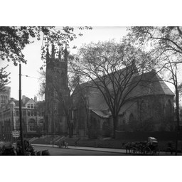

{
"schema_version": "real_pilot_intelligence_packet_v1.0.0",
"packet_id": "real-pilot-intelligence:78363c5144c7310435c5d219",
"numeric_id": 102,
"record_id": "mtl_archives_metadata_102.json",
"lane": "ground_ocr_entity_place",
"lineage": {
"selection_sha256": "7c3729108057b374f2a108d0e3f556abcbec402d071b89268269c71340f9b96f",
"promotion_sha256": "8fe075ab8770891662b3b78045ea77d179455af893fdef5f68a28b4e6f2f075a",
"independent_review_sha256": "e614092da109c9fc90802dafae1b62741669aa748323bb43b98c2ad6235513e7",
"source_acquisition_sha256": "4a091067c919c465c9c8940aa1dd5acc6f46e740f6ad6416acdfff101f63de10",
"source_acquisition_registered_tree_sha256": "25e8d81348d0b9371af71329168bba8676115b800cdc88c9281accc7a907b2d3",
"candidate_id": "real-pilot-candidate:78363c5144c7310435c5d219",
"promotion_id": "real-pilot-visual-promotion:44f62e0e7be157e63bb14055",
"source_identity_sha256": "44ff5a7cbdde5fb01bcd958a1c5030bb917555395d5f39c177e7500df8149ca0"
},
"pixel_scope": {
"asset_class": "derivative_256",
"path": "docs/dataset-factory/fixtures/canonical-image-recovery-v1/inspection-derivatives/mtl_archives_metadata_102.jpg",
"sha256": "2f4deb1693336e4fc08809f43635855f96c0636cb323e0081854472e5b6c96e5",
"width": 256,
"height": 256
},
"regions": [
{
"region_id": "whole",
"kind": "whole_image",
"bbox_xyxy_norm": null,
"justification": "Explicit whole-image evidence: the scene-level observation depends on the complete bound 256x256 derivative and is not represented by a localized box."
}
],
"structured_ocr": [],
"claims": {
"archive_metadata_report": [
{
"claim_id": "metadata-1",
"text": "Église Saint-Georges (1086, rue Osborne - devenu rue de Lagauchetière)",
"field": "Titre",
"boundary": "archive_metadata_report",
"region_id": null,
"source_evidence_id": "archive-row",
"status": "reported_not_independently_corroborated"
},
{
"claim_id": "metadata-2",
"text": "25-avr.-47",
"field": "Date",
"boundary": "archive_metadata_report",
"region_id": null,
"source_evidence_id": "archive-row",
"status": "reported_not_independently_corroborated"
},
{
"claim_id": "metadata-3",
"text": "VM94,SY,SS1,SSS17,D180,P5",
"field": "Cote",
"boundary": "archive_metadata_report",
"region_id": null,
"source_evidence_id": "archive-row",
"status": "reported_not_independently_corroborated"
},
{
"claim_id": "metadata-4",
"text": "http://depot.ville.montreal.qc.ca/phototheque-archives/tiff/VM94-Z181-5.tif",
"field": "Fichier tif - 300 dpi",
"boundary": "archive_metadata_report",
"region_id": null,
"source_evidence_id": "archive-row",
"status": "reported_not_independently_corroborated"
},
{
"claim_id": "metadata-5",
"text": "http://depot.ville.montreal.qc.ca/phototheque-archives/jpeg/VM94-Z181-5.jpg",
"field": "Fichier jpg - 200 dpi",
"boundary": "archive_metadata_report",
"region_id": null,
"source_evidence_id": "archive-row",
"status": "reported_not_independently_corroborated"
},
{
"claim_id": "metadata-6",
"text": "Archives de la Ville de Montréal",
"field": "Mention de crédits",
"boundary": "archive_metadata_report",
"region_id": null,
"source_evidence_id": "archive-row",
"status": "reported_not_independently_corroborated"
}
],
"visual_observation": [
{
"claim_id": "visual-1",
"text": "masonry church-like building",
"boundary": "visual_observation",
"region_id": "whole",
"source_evidence_id": null,
"status": "accepted_pixel_observation"
},
{
"claim_id": "visual-2",
"text": "tower or steeple",
"boundary": "visual_observation",
"region_id": "whole",
"source_evidence_id": null,
"status": "accepted_pixel_observation"
},
{
"claim_id": "visual-3",
"text": "trees",
"boundary": "visual_observation",
"region_id": "whole",
"source_evidence_id": null,
"status": "accepted_pixel_observation"
},
{
"claim_id": "visual-4",
"text": "parked automobile",
"boundary": "visual_observation",
"region_id": "whole",
"source_evidence_id": null,
"status": "accepted_pixel_observation"
}
],
"inference": [],
"rejected": []
},
"source_evidence": [
{
"evidence_id": "archive-row",
"source_key": "ground_csv",
"source_url": "https://donnees.montreal.ca/fr/dataset/cc3fbf3d-f93c-479d-a807-9ae042721aba/resource/41f0cec9-2110-452e-a93d-8f29190ee2ae/download/photothequearchives.csv",
"snapshot_path": "docs/dataset-factory/fixtures/real-pilot-source-acquisition-v1/snapshot/ground_csv.csv",
"snapshot_sha256": "553e0d21a730f34982188c4918488174803c6fc3ee4cb69420500574165b8c2f",
"locator": {
"kind": "csv_row",
"member": "snapshot/ground_csv.csv",
"row_key": "Cote",
"row_value": "VM94,SY,SS1,SSS17,D180,P5",
"row_sha256": "475bb9f783f36df8b6247df066051bc1cbab99680f69471961eb5e64c4a42af0"
}
},
{
"evidence_id": "record-image",
"source_key": "image_102",
"source_url": "https://depot.ville.montreal.qc.ca/phototheque-archives/jpeg/VM94-Z181-5.jpg",
"snapshot_path": "docs/dataset-factory/fixtures/real-pilot-source-acquisition-v1/snapshot/image-samples/102.bin",
"snapshot_sha256": "6909f2773c0db6660e725fd948b2516302975e819d839f14d17020beaa1e4045",
"locator": {
"kind": "byte_range_member",
"member": "snapshot/image-samples/102.bin",
"content_range": "bytes 0-4095/1031779",
"object_length": 1031779
}
},
{
"evidence_id": "collection-page",
"source_key": "ground_page",
"source_url": "https://donnees.montreal.ca/dataset/phototheque-archives",
"snapshot_path": "docs/dataset-factory/fixtures/real-pilot-source-acquisition-v1/snapshot/ground_page.html",
"snapshot_sha256": "deaa62e3a1ad38ff525a8295301df2e0b82bedf25201b59faa66f3825d406466",
"locator": {
"kind": "html_member",
"member": "snapshot/ground_page.html",
"section": "Photothèque des Archives de la Ville de Montréal"
}
},
{
"evidence_id": "license-page",
"source_key": "license_page",
"source_url": "https://donnees.montreal.ca/pages/licence-d-utilisation",
"snapshot_path": "docs/dataset-factory/fixtures/real-pilot-source-acquisition-v1/snapshot/license_page.html",
"snapshot_sha256": "8d5838a3b7490fae99f7e2d353fcd5c16013dc0cd37434e76e76dd2c1bcaf810",
"locator": {
"kind": "html_member",
"member": "snapshot/license_page.html",
"section": "Licence ouverte - attribution"
}
},
{
"evidence_id": "cc-by-4.0",
"source_key": "cc_by",
"source_url": "https://creativecommons.org/licenses/by/4.0/",
"snapshot_path": "docs/dataset-factory/fixtures/real-pilot-source-acquisition-v1/snapshot/cc_by.html",
"snapshot_sha256": "231a5dac65bbf135ba27145969a63cd289faadc172f1512c4810a6c60ba91036",
"locator": {
"kind": "html_member",
"member": "snapshot/cc_by.html",
"section": "Creative Commons Attribution 4.0 International"
}
}
],
"rights": {
"license_id": "cc-by-4.0",
"attribution": "Ville de Montréal",
"commercial_use_allowed": true,
"license_evidence_ids": [
"license-page",
"cc-by-4.0"
],
"attribution_evidence_id": "archive-row",
"scope_note": "Captured source evidence supports CC BY 4.0 and attribution; it does not independently corroborate image content or historical claims."
},
"research": {
"attempts": [
{
"source_evidence_id": "archive-row",
"result": "Bound source snapshot inspected; no independent historical corroboration promoted."
},
{
"source_evidence_id": "record-image",
"result": "Exact record-specific source-ledger image sample inspected; availability and byte-range identity only."
},
{
"source_evidence_id": "collection-page",
"result": "Bound source snapshot inspected; no independent historical corroboration promoted."
},
{
"source_evidence_id": "license-page",
"result": "Bound source snapshot inspected; no independent historical corroboration promoted."
},
{
"source_evidence_id": "cc-by-4.0",
"result": "Bound source snapshot inspected; no independent historical corroboration promoted."
}
],
"unresolved": [
"architectural feature review",
"source-backed building and address verification"
],
"rejected": []
},
"abstentions": [
"church identity, address, and date are not pixel-verified",
"No exact location, measurement, area, distance, scale, georeference, entity identity, or historical claim is independently corroborated."
],
"dossier": {
"state": "research_incomplete",
"fully_verified": false
},
"independent_review_input": {
"state": "pending",
"reviewer_id": null,
"decision": null,
"primary_decision_digest": null
},
"benchmark": {
"eligible": false,
"task_count": 0,
"gold_status": "not_independently_corroborated"
}
}